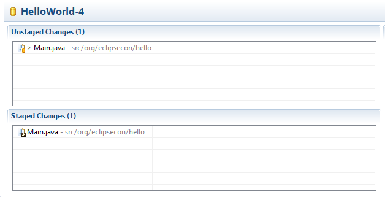
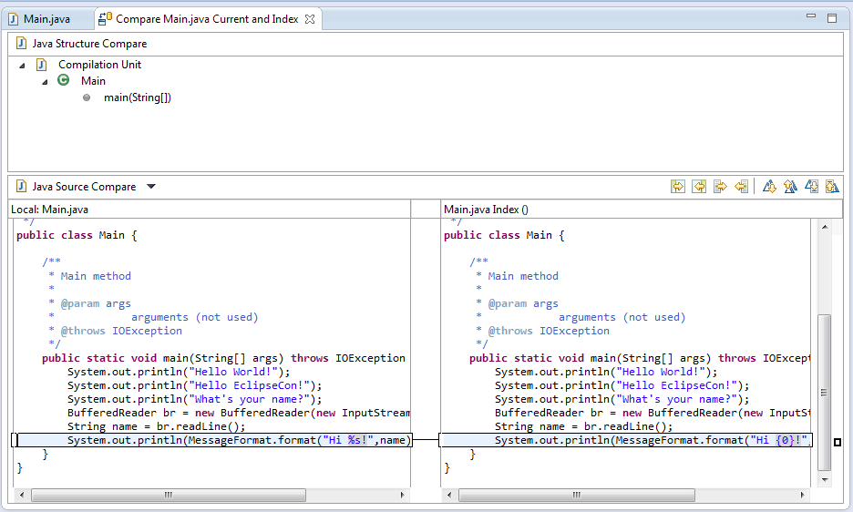
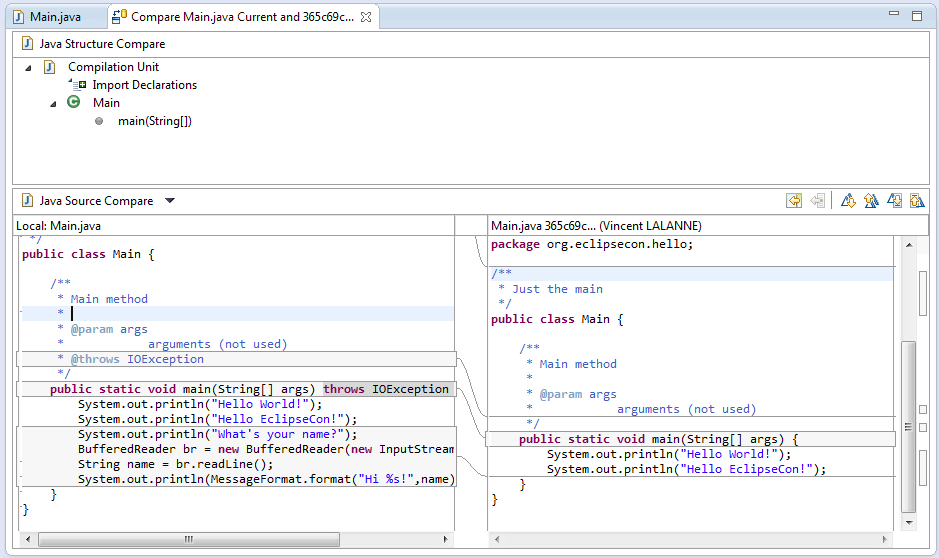
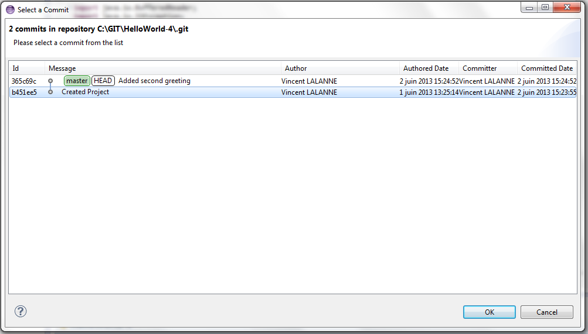
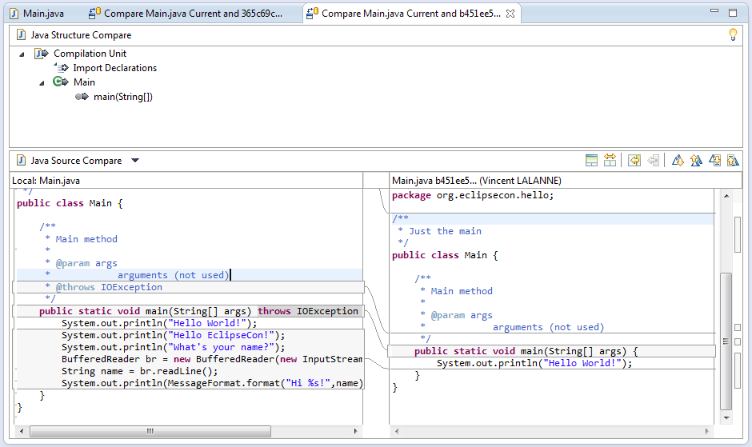

Playing with Diff
- Close opened projects and open the HelloWorld-4 project
The project contains a Git repository with a short history. - Modify the Main class to use
String.format()instead ofMessageFormat.format(). ReplaceSystem.out.println(MessageFormat.format("Hi {0}!",name));withSystem.out.println(String.format("Hi %s!",name)); - The file is now both staged and modified
 - Right-click on
Main.javaand click onCompare with > Git Indexto display the diff between the working version and the staged version of the file
.Note
You can also display this diff by double-clicking the file name in the Git Staging view. - In the same menu, click on
Compare with > HEAD Revisionto display the diff between the working version and the last comitted version of the file
. - Still in the same menu, click on
Compare with > Commit.... - Select the
Created Projectcommit to display the diff between the working version and version of the filein that commit

. - The
Compare Withmenu contains other types of diff, try some of the other options.